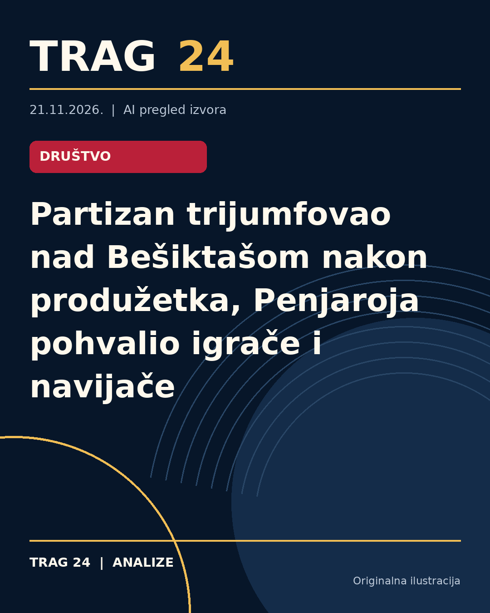

Partizan trijumfovao nad Bešiktašom nakon produžetka, Penjaroja pohvalio igrače i navijače

ŠTA SE DOGODILO
Košarkaši Partizana su u 13. kolu Evrolige savladali Bešiktaš sa 91:87 nakon produžetka u hali "Aleksandar Nikolić" (poznatoj i kao "Pionir"), u atmosferi koju je trener Đoan Penjaroja opisao kao izuzetno zahtevnu. Ovo je bila važna pobeda za tim iz Beograda, naročito jer su igrali bez četvorice povređenih igrača.
HRONOLOGIJA
Utakmica je bila neizvesna, sa priličnim ravnotežama u toku celog meča. Kulminirala je u poslednjoj četvrtini gde je Bešiktašev igrač Loni Voker uspeo da poništi sav trud domaćina. Ipak, Partizan je uspeo da se izbori za produžetak i trijumf kroz dodatni period igre. Tim sada ima skor od sedam pobeda i šest poraza u Evroligi.
ŠTA NAVODE IZVORI
Obojica izvora, Novosti i Nova.rs, prenose izjave trenera Penjaroje u kojima on izražava veliko zadovoljstvo i ponos zbog nastupa igrača i podrške navijača. Posebno je istakao ključnu ulogu Kajla Olmena, čiji je doprinos bio dragocen, kao i napredak kapitena Vanje Marinkovića koji se oporavio od teške povrede i pruža značajnu pomoć timu u trenucima kad rotacija nije potpuna. Penjaroja je istakao da su svi igrači dali svoj doprinos pobedi.
ŠTA JE POTVRĐENO
Confirmirane su informacije da je utakmica završena rezultatom 91:87 u korist Partizana nakon produžetaka. Bešiktaš je na terenu predvodio Loni Voker. Partizan je nastupio oslabljeno zbog povreda, ali uz podršku zvaničnih navijača u hali "Pionir" ostvario važnu evropsku pobedu. Trener je javno pohvalio atmosferu i navijače kao jedan od faktora uspeha.
ŠTA NIJE POTVRĐENO
Nema dostupnih informacija o tačnim minutama igrača tokom utakmice ili o detaljnim statističkim podacima svih učesnika meča. Takođe, nema potvrde o zdravstvenom stanju povređenih igrača posle utakmice niti o eventualnim promenama u sastavu za naredne mečeve.
ŠTA OSTАJE OTVORENO: Ostaje nepoznato kako će Partizan dalje rešavati probleme sa povredama koje su uticale na rotaciju tima u ovoj sezoni. Takođe, biće zanimljivo pratiti kako će ovaj trijumf uticati na njihovu formu i rezultate u nastavku Evrolige, posebno pred naredno gostovanje ekipi Dubaija.
Izvori
- https://www.novosti.rs/sport/kosarka/1673270/djoan-penjaroja-konferencija-medije-partizan-besiktas-evroliga
- https://nova.rs/sport/evroliga/penjaroja-ponosan-na-igrace-i-navijace-imamo-mnogo-razloga-za-zadovoljstvo/
Ova analiza je pripremljena uz pomoć veštačke inteligencije na osnovu javno dostupnih izvora. Navodi izvora nisu nužno nezavisno potvrđeni.